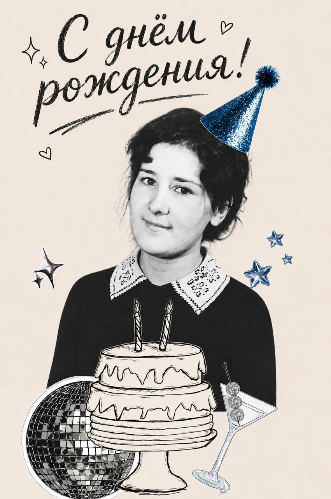
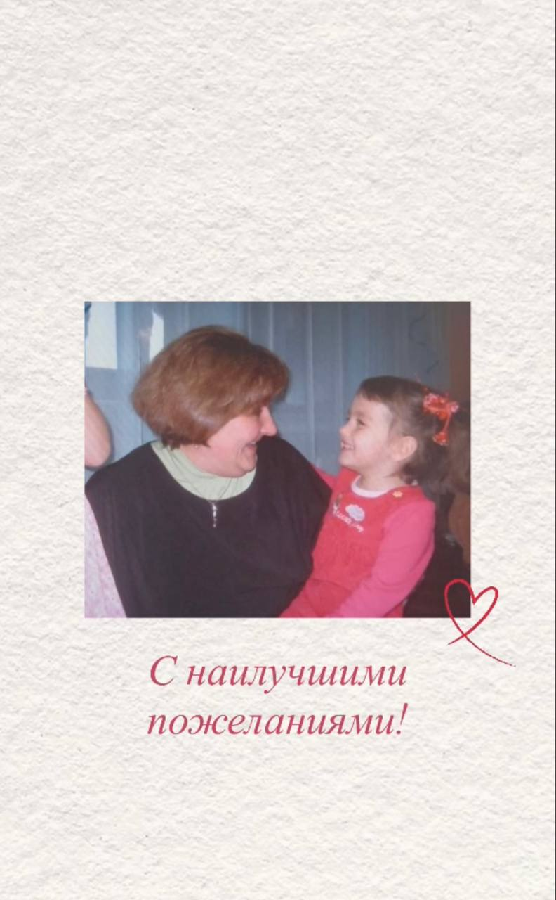
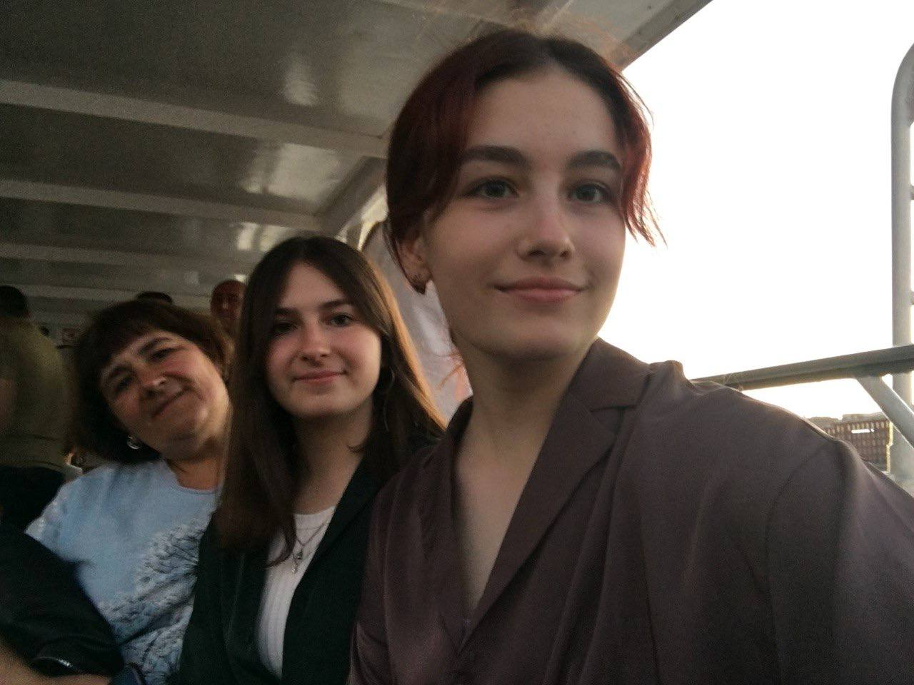
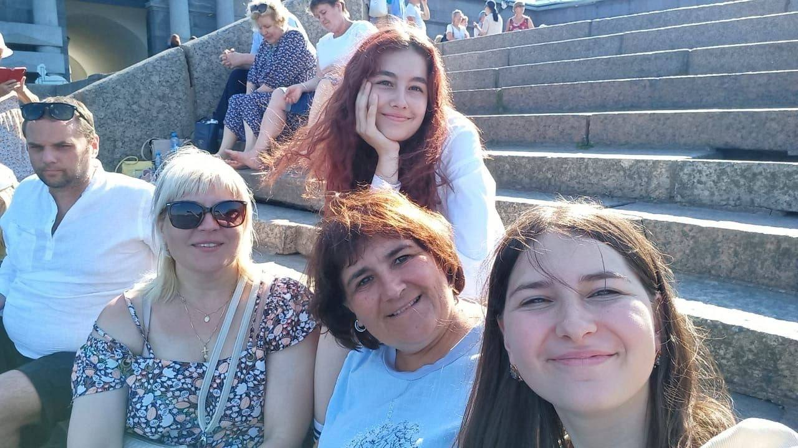
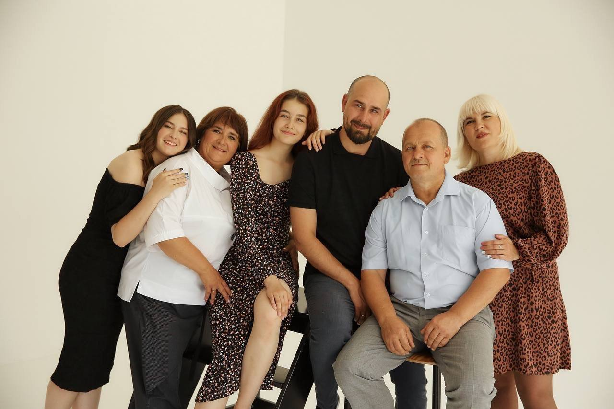
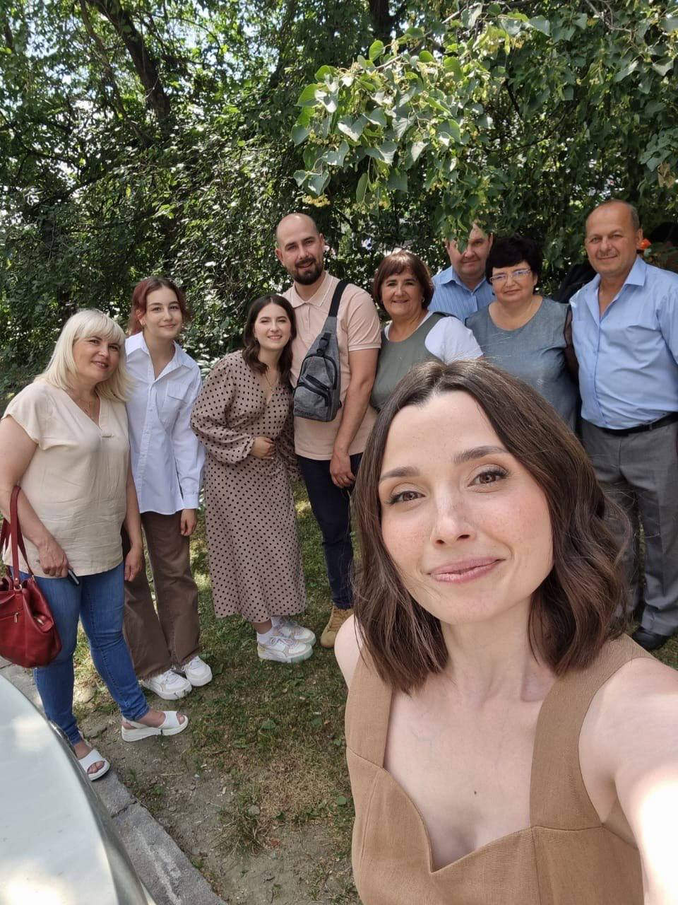
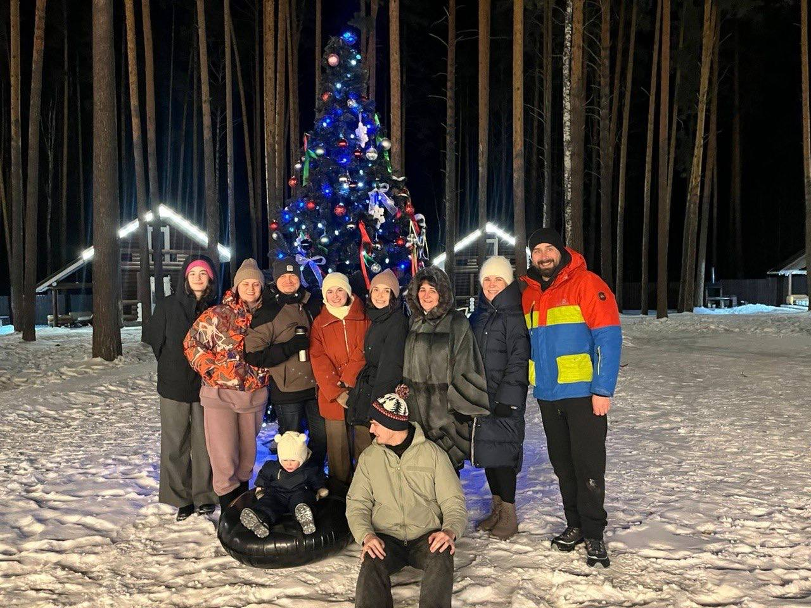
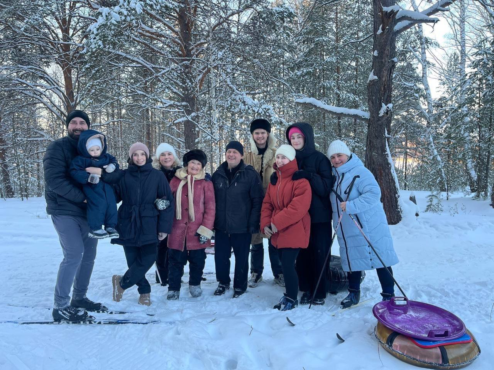

Сколько же тёплых и приятных воспоминаний связано с детством: время, проведённое на площадке и в школьном лагере, совместные поездки в Крым и Санкт-Петербург. Это те моменты, которые с особой теплотой вспоминаются даже спустя годы.
Отдельное место в памяти занимают интересные рассказы об исторических фактах, которыми всегда сопровождались наши поездки. Благодаря этому даже путешествия становились маленькими познавательными приключениями. А ещё так приятно, что нас объединяет общая любовь к выпечке и созданию красивых десертов — ведь даже такие небольшие увлечения могут сближать и создавать особенные моменты.
Хочется пожелать, чтобы впереди было ещё много радостных событий, вдохновения и поводов для улыбок. Чтобы каждый день приносил что-то хорошее, рядом всегда были близкие люди, а в жизни хватало времени на любимые занятия, исполнение желаний и маленькие удовольствия.


Пусть впереди будет ещё много совместных путешествий, красивых городов и незабываемых впечатлений! Очень хочется снова побывать вместе в Петербурге, гулять по его любимым улочкам, любоваться красотой города и создавать новые воспоминания. Желаю, чтобы таких поездок, тёплых встреч и счастливых моментов было ещё очень-очень много!


Пусть в душе всегда цветёт весна, в сердце живёт любовь, а рядом будут самые дорогие люди


Пусть близкие радуют своей любовью, дети и родные дарят поводы для гордости, а каждый день приносит что-то хорошее.